Our media asset framework resolves the three strategic questions that dictate institutional and commercial support: can this programme represent us, can it justify our funding support, and can this partnership withstand scrutiny as valuable, defensible, and renewable at board level? The case records below show the framework applied.
Emerging elite player pool tracking toward national pathway selection, state representation, and programme brand development.
Build a centralised, modular visual asset library, deployable across media releases, annual reports, funding submissions and sponsor communications simultaneously. One asset architecture. Every image standardised.
Media asset framework applied across three evidence layers: Visible. Credible. Investable.
Every image delivered with full release compliance and standardised to deploy immediately, because a board paper, a grant submission and a sponsor report cannot wait for post-production. That is what makes the evidence decision-grade: it is ready to justify investment the moment it arrives.


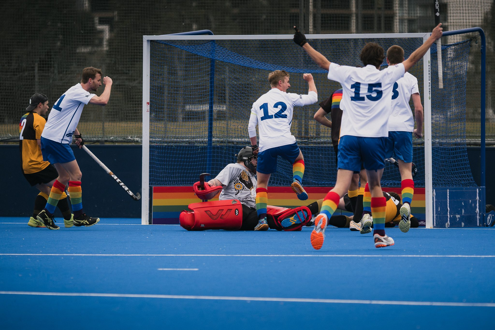
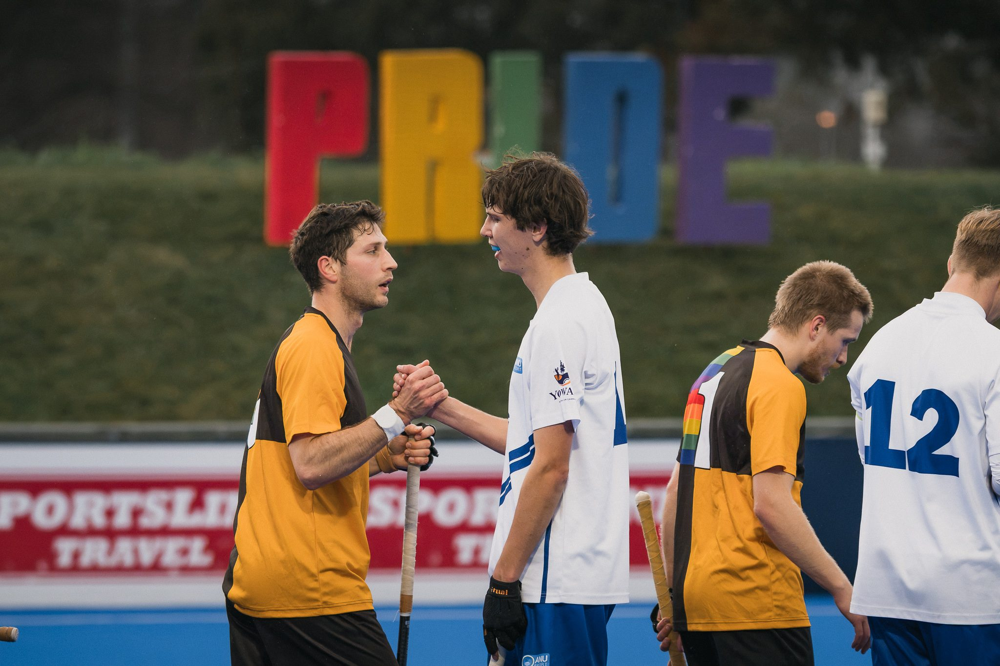

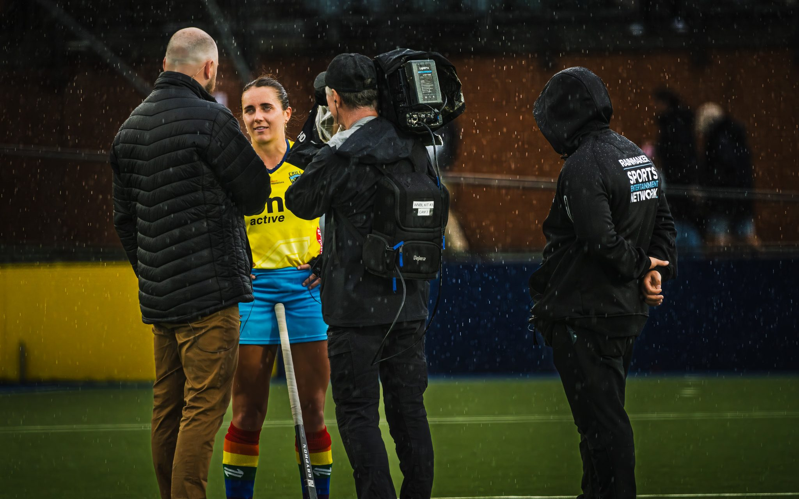


Lyle Holt is a Livin for Hockey Ambassador and official photographer, delivering campaign-grade visual evidence across competition rounds that documents community connection, athlete wellbeing, and institutional values in action.


AFL Canberra needed consistent, professional imagery across roughly 70 athletes from multiple clubs before the season began.
A single structured media day producing around 200 studio-lit identity portraits as a season-long asset library — not event coverage.
Lighting design engineered to capture both athlete faces and sponsor marks clearly across every channel.
One production day yielded approximately 200 deployable assets with consistent visual standards across all clubs.


The same asset library, redeployed. A single production produces imagery that serves commercial activation, institutional governance, and international programme reporting — proof that one properly-architected shoot outlasts any single use case.
Matchday atmosphere redeployed for 2026 membership sales campaigns.


Competition-coverage imagery redeployed into governance and strategic planning documents.


U.S. Department of Defense school athletic programme, documented for institutional reporting.


Institutional authority portrait of Air Vice-Marshal (Ret'd) Catherine Roberts AO, CSC, deployed by ASX-listed Electro Optic Systems.

An emerging flag football league building depth ahead of flag football's LA 2028 Olympics demonstration sport debut.
Four months of embedded coverage across multiple venues, engineered for social media, recruitment, and community building, with scalability to commercial use.
The league confirmed in writing that the visual programme was integral to season success, and requested a permanent professional arrangement.


No. 100 Squadron RAAF operates a heritage P-51D Mustang fleet from RAAF Base Point Cook — one of eleven aircraft selected for continued active flying.
Signature portrait and documentary coverage for Warbirds Over Scone, building an institutional-grade asset library for Defence media, heritage reporting, and public engagement.
Signature portraits and documentary coverage delivered in a single deployment for media releases and stakeholder reporting.

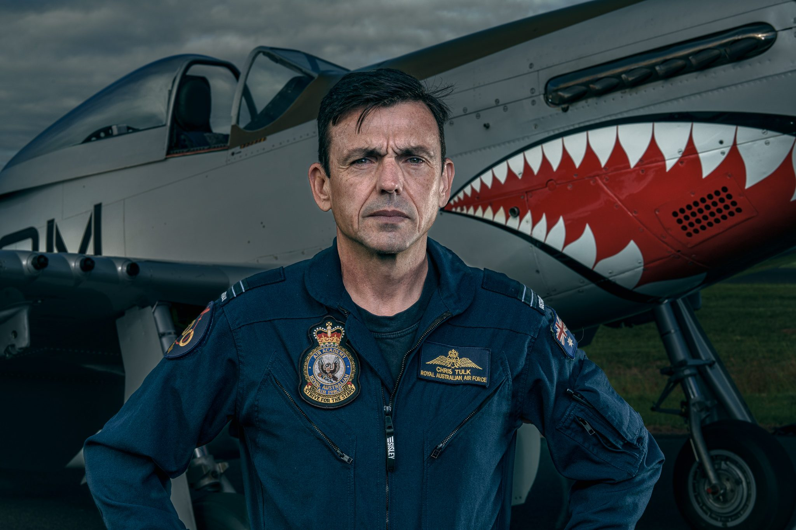
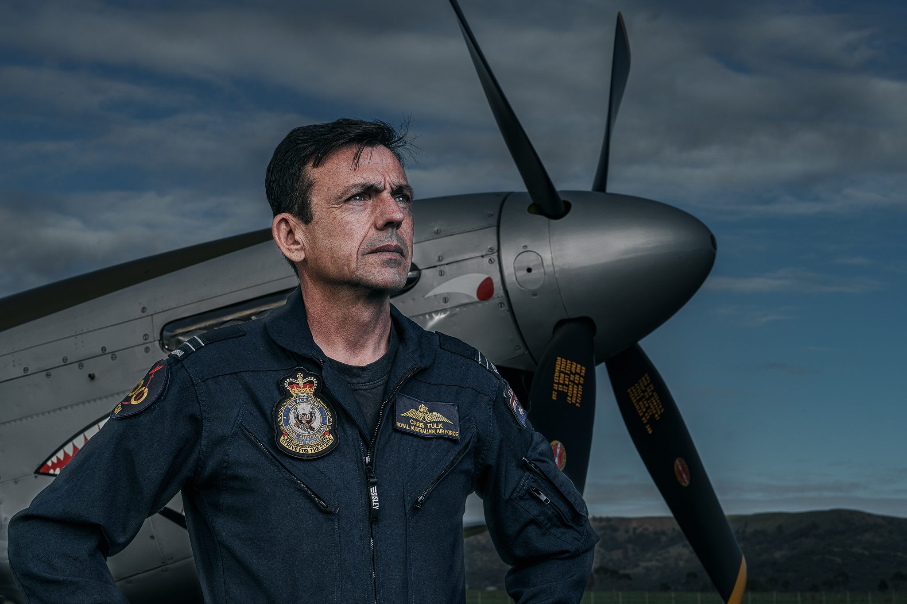
Pilot FLTLT Chris Tulk in command portrait with shark-mouth nose art; Mustang low pass; cockpit portraits; landing roll with mountain backdrop; production methodology with MagMod-controlled lighting.
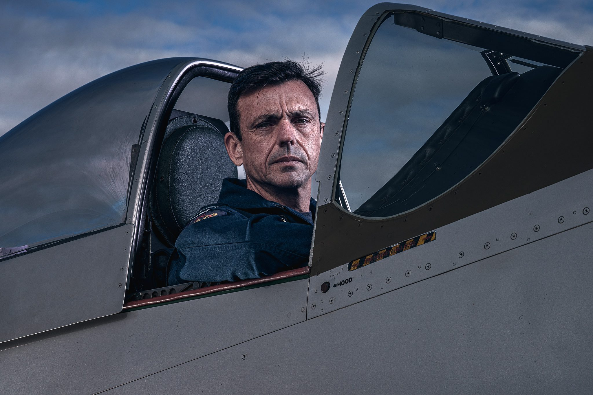
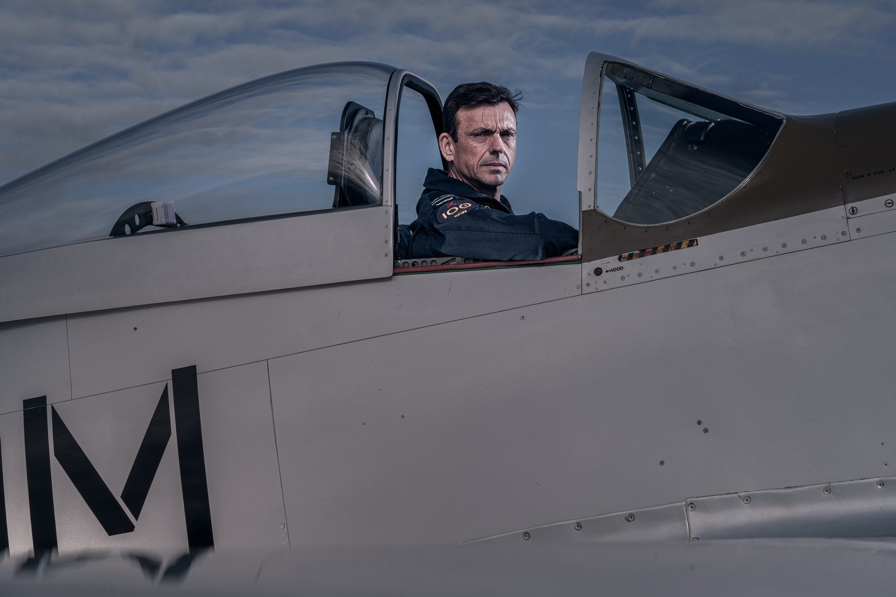
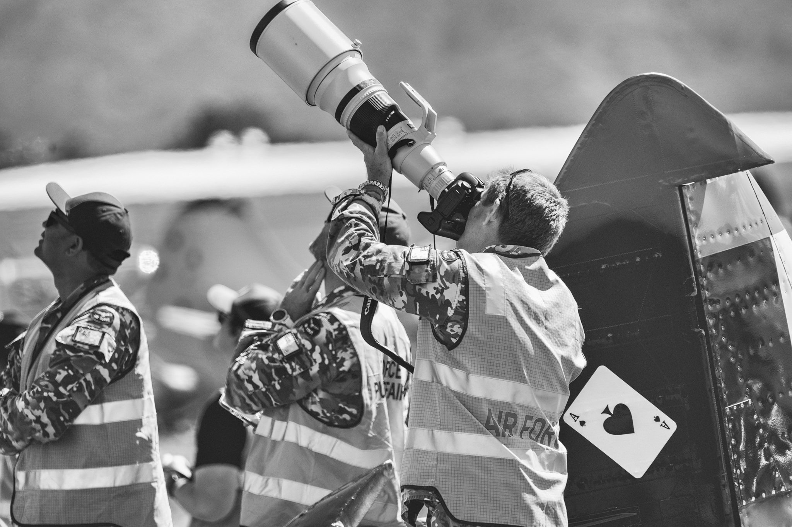
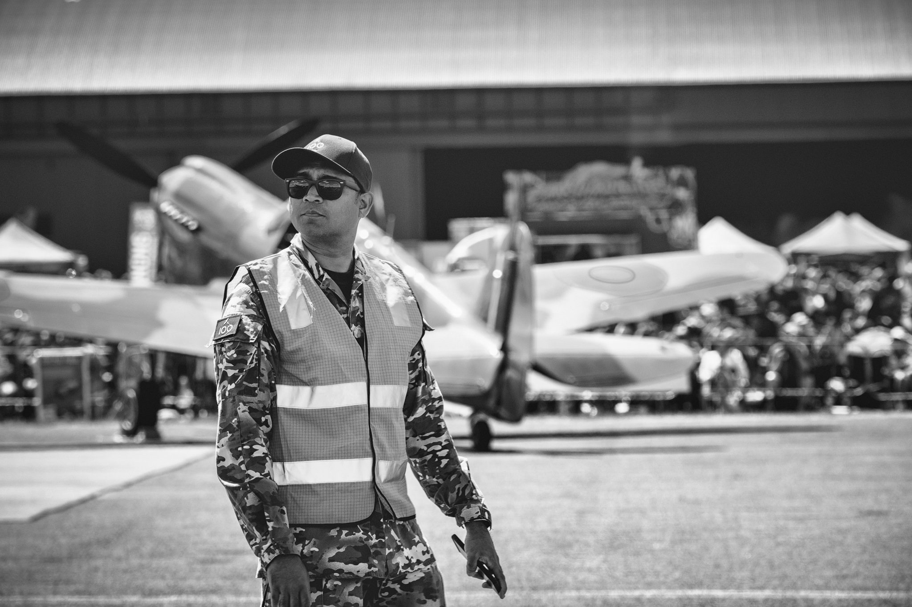
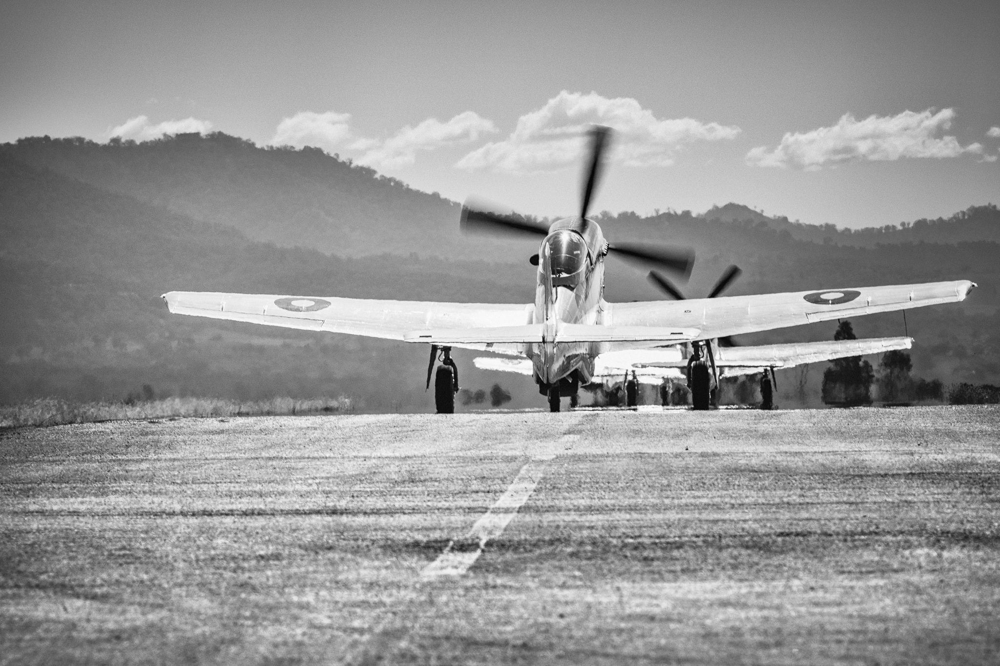
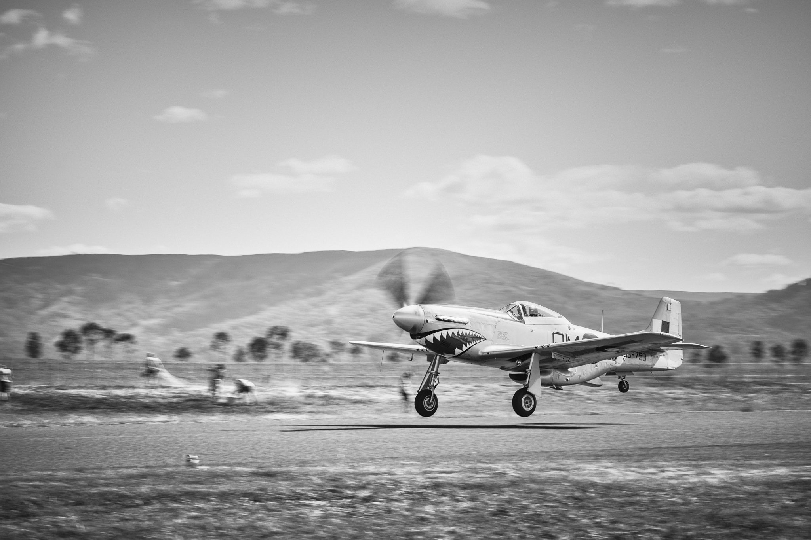

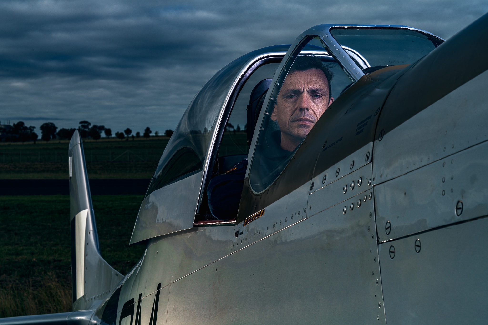
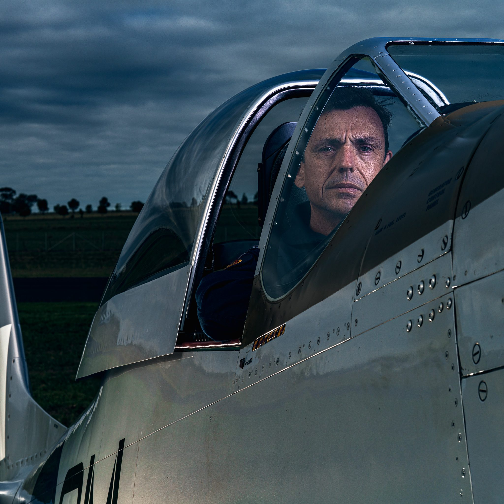
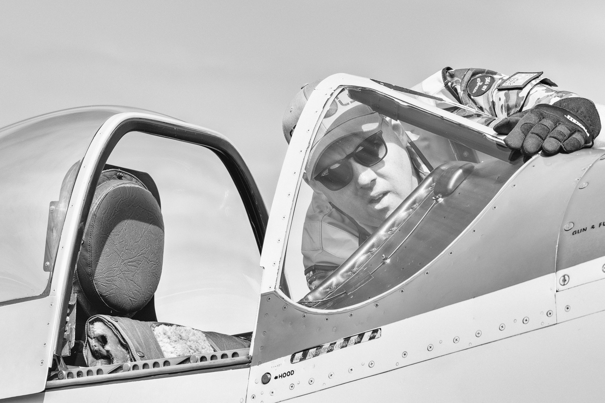


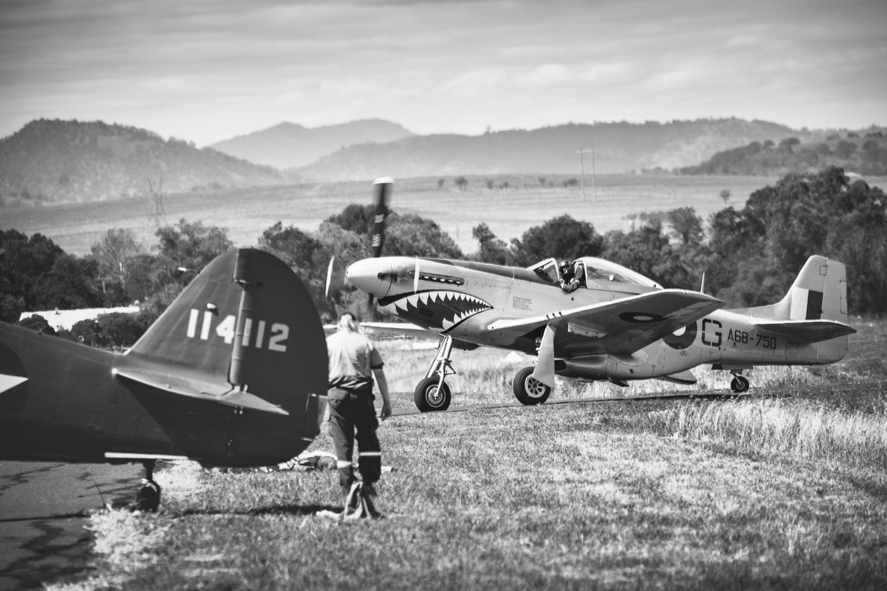
Lyle Holt's 34-year Royal Australian Navy and Air Force career included command of UN Command (Rear) in Japan, Director of Plan Jericho, and operations spanning F-111 precision strike through to uncrewed aircraft in Afghanistan. That career was built on producing actionable evidence for senior decision-makers under the highest scrutiny — the same discipline now applied to elite sport.
Based in Canberra. Active deployments worldwide.